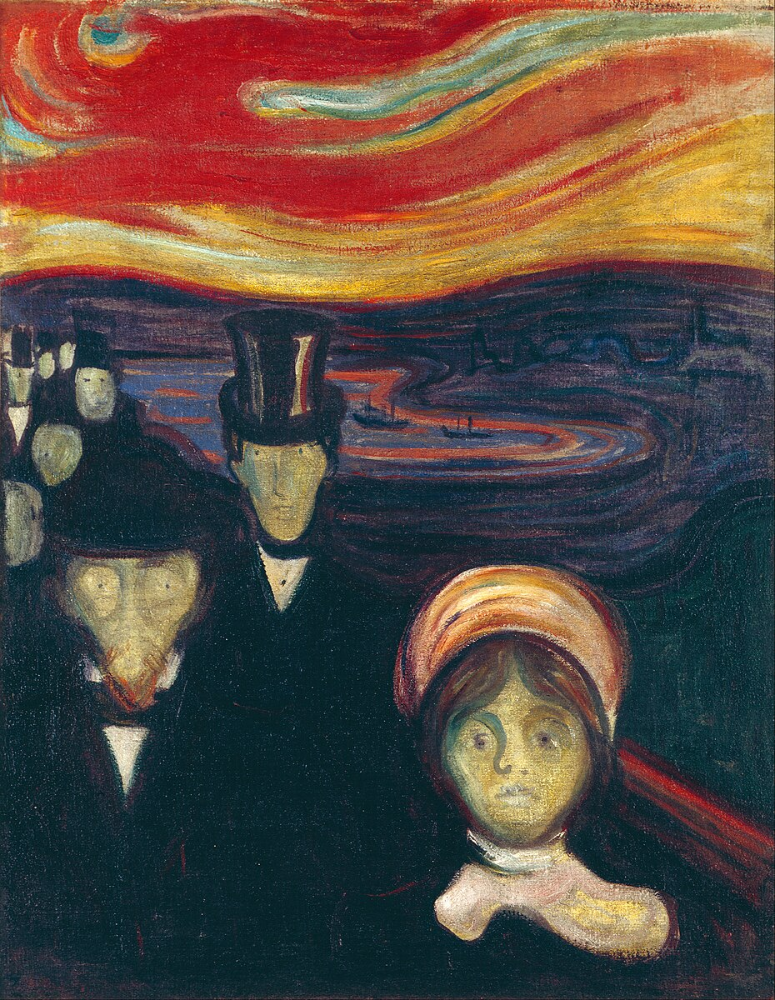

PhD Evaluation: 9-month Report
June 2024
Preface

Anxiety (1894), Edvard Munch.
This is the html output of Aamir Sohail’s 9-month report required for PhD students at the School of Psychology, University of Birmingham. You can view the pdf version from the toolbar above.
This report was conducted under the supervision of Dr. Lei Zhang and Prof. Patricia L. Lockwood at the School of Psychology, University of Birmingham.

The online version of this thesis is licensed under a Creative Commons Attribution 4.0 International License.
'Anxiety' by Edvard Munch is in the public domain in its country of origin and other countries and areas where the copyright term is the author's life plus 75 years or fewer. The original, from which the photograph is taken, is property of the Munch Museet, Oslo.